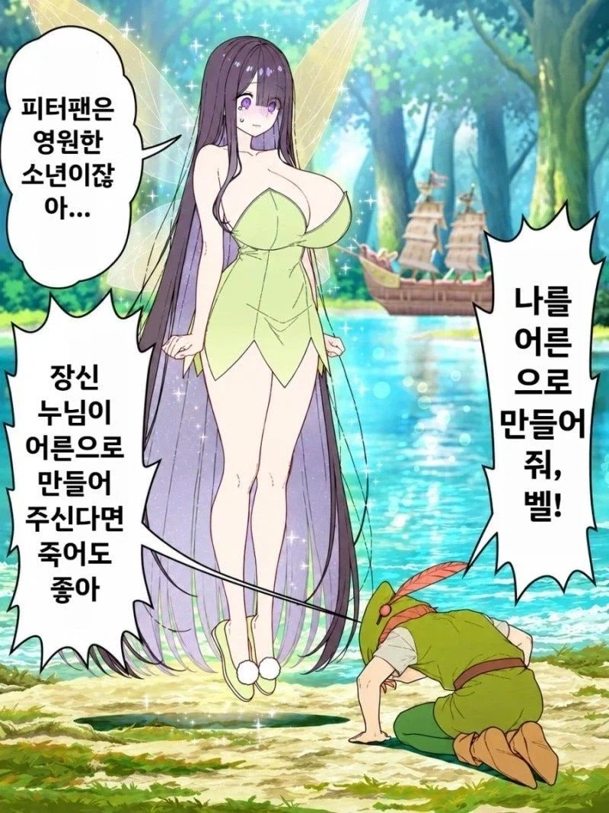
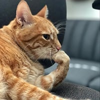

60 · 37 · 4 시간 전 · 원문

수집 당시 댓글 37개
김치피자하와이안탕수육 · 5 시간 전
이혼 · 5 시간 전
후크선장 갈고리손이랑도 해봤나보네
연분홍 · 5 시간 전
난코박고죽음을택하겠다 · 5 시간 전
후크선장 손목이 왜 나갔을까..??
↳ 답글 · 초코맛붕어싸만코 · 4 시간 전
티쓰
↳ 답글 · 오왕재 · 4 시간 전
↳ 답글 · OBV지표 · 4 시간 전
밑장빼다 걸려서?
↳ 답글 · 호두팝콘 · 4 시간 전
피스팅 생각한 나 반성해~
↳ 답글 · 이지남캐 · 4 시간 전
피스팅을 했는데 손이 잘렸다? 흠...
↳ 답글 · 감도안잡히는지감도안잡힘 · 3 시간 전
↳ 답글 · 180122 · 3 시간 전
악어박이라서
↳ 답글 · 베스트호감드라이버 · 3 시간 전
그런가...팅커벨로 보이는가....
크아악...!! 손이...손이 안빠져...!!
알바트로스 · 5 시간 전
누나... 후크선장급이라는건 어떻게 안거야?
↳ 답글 · 아니이개외안되 · 3 시간 전
낮에서 피터, 밤에는 후크
공공연한 사실임
Montmartre · 5 시간 전
그을레같은년
꾸구가가 · 5 시간 전
유한매트 · 5 시간 전
와 팅커벨
kruise · 5 시간 전

섹시코만도 · 4 시간 전
후크급? 누나 비처녀였어?
↳ 답글 · 베데엔차 · 4 시간 전
후크 선장도 한때 어린이였어
어떻게 어른이 되었다고 생각해?
↳ 답글 · 개듸리퍼 · 3 시간 전
늙어서
번육개장먹는사람 · 4 시간 전
착한댕댕이 · 4 시간 전
영원한 소년 드립넷
오나홀소믈리에 · 4 시간 전
어흐어흐마
오늘부터우리는 · 4 시간 전
개같이 박았구나
경북 · 4 시간 전
사장님 여기 벌레들어갔어요
Entfremdung · 4 시간 전
도대체 후크선장의 밤일 능력은 어케알고있었던거임
쿠쿠쿠쿠 · 4 시간 전
잠긴문짝 · 4 시간 전
어른 공장이네...
2대 후크인가?
벨즈 · 4 시간 전
락스계 · 4 시간 전
라무스요 · 3 시간 전
나이30먹고 나는 아직도 소년이다...
유칼립투스탈곡기 · 3 시간 전
유토니움 · 3 시간 전
후크 선장이 왜 네버랜드를 다시 찾았을까?
제임스와 팅커벨이 어째서 아는사이이고
제임스는 어째서 후크 선장이 되어 네버랜드에 집착하는걸까?
지금 바로 세레나 발렌티노 저 디즈니의 악당들 9권 네버네버를 읽도록해!
↳ 답글 · shipsaekki · 1 시간 전
그거 국내 출간됨?
↳ 답글 · 유토니움 · 55 분 전
아쉽게도 않이오
Aquamarine · 54 분 전
어흐
댓글
수집 당시 댓글 37개
김치피자하와이안탕수육 · 5 시간 전
이혼 · 5 시간 전
후크선장 갈고리손이랑도 해봤나보네
연분홍 · 5 시간 전
난코박고죽음을택하겠다 · 5 시간 전
후크선장 손목이 왜 나갔을까..??
· 초코맛붕어싸만코 · 4 시간 전
티쓰
· 오왕재 · 4 시간 전
· OBV지표 · 4 시간 전
밑장빼다 걸려서?
· 호두팝콘 · 4 시간 전
피스팅 생각한 나 반성해~
· 이지남캐 · 4 시간 전
피스팅을 했는데 손이 잘렸다? 흠...
· 감도안잡히는지감도안잡힘 · 3 시간 전
· 180122 · 3 시간 전
악어박이라서
· 베스트호감드라이버 · 3 시간 전
그런가...팅커벨로 보이는가....
크아악...!! 손이...손이 안빠져...!!
알바트로스 · 5 시간 전
누나... 후크선장급이라는건 어떻게 안거야?
· 아니이개외안되 · 3 시간 전
낮에서 피터, 밤에는 후크
공공연한 사실임
Montmartre · 5 시간 전
그을레같은년
꾸구가가 · 5 시간 전
유한매트 · 5 시간 전
와 팅커벨
kruise · 5 시간 전

섹시코만도 · 4 시간 전
후크급? 누나 비처녀였어?
· 베데엔차 · 4 시간 전
후크 선장도 한때 어린이였어
어떻게 어른이 되었다고 생각해?
· 개듸리퍼 · 3 시간 전
늙어서
번육개장먹는사람 · 4 시간 전
착한댕댕이 · 4 시간 전
영원한 소년 드립넷
오나홀소믈리에 · 4 시간 전
어흐어흐마
오늘부터우리는 · 4 시간 전
개같이 박았구나
경북 · 4 시간 전
사장님 여기 벌레들어갔어요
Entfremdung · 4 시간 전
도대체 후크선장의 밤일 능력은 어케알고있었던거임
쿠쿠쿠쿠 · 4 시간 전
잠긴문짝 · 4 시간 전
어른 공장이네...
2대 후크인가?
벨즈 · 4 시간 전
락스계 · 4 시간 전
라무스요 · 3 시간 전
나이30먹고 나는 아직도 소년이다...
유칼립투스탈곡기 · 3 시간 전
유토니움 · 3 시간 전
후크 선장이 왜 네버랜드를 다시 찾았을까?
제임스와 팅커벨이 어째서 아는사이이고
제임스는 어째서 후크 선장이 되어 네버랜드에 집착하는걸까?
지금 바로 세레나 발렌티노 저 디즈니의 악당들 9권 네버네버를 읽도록해!
· shipsaekki · 1 시간 전
그거 국내 출간됨?
· 유토니움 · 55 분 전
아쉽게도 않이오
Aquamarine · 54 분 전
어흐